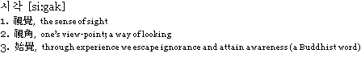

| Dreaming a Fingertip Conversation with You _ tactuaL [si : gak] series #1 |
|  |  |
since _ January, 2007 concept work by Haemin Kim + Junghyun Ahn ttechnician _ Changkyung Kim | studioX sound interaction design _ Hyunsuk Jun | Graduate School of Korea National University of Arts special thanks to_ media artist e.j.gone & jinyo mok |
| concept | tactuaLight [text] #1 | tactuaLight [image] #2 | tactuaListening [sound] #3 | |||
| Dreaming a Fingertip Conversation with You _ TactuaL [si:gak] series is a project presenting a communicational method for the visually handicapped to the non-handicapped using physical computing. |
We can read a sentence by Hands. Braille Type >>> Visual Type Tactual Sense + Light = Text |
We can see a picture by Hands. Braille Drawing >>> Visual Drawing Tactual Sense + Light = Image |
We can listen a song by Hands. Braille Listening >>> Visual Listening Tactual Sense + Listening = Sound |
|||
| This study focuses on how to read textual expressions by using tactual & visual senses. Each installation works by an input signal from a touch sensor. Spectators can see texts and pictures, and hear the sounds by tactual input behavior. |  |
|||||
| Through this interactive process, we can understand how the blind may feel. >>> Artist Statement >>> Technical Statement >>> play the description mov |
Through this interactive process, we can understand how the blind may feel. >>> how it works >>> detail |
Through this interactive process, we can understand how the blind may feel. >>> how it works >>> detail |
Through this interactive process, we can understand how the blind may feel. >>> how it works >>> detail |
| built with Processing, Wiring, MAX/MSP, Jitter, Code Vision copyright 2007 (at) haemin kim + junghyun ahn |